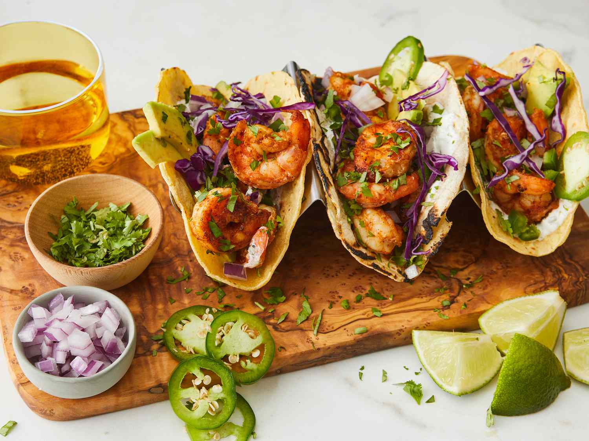
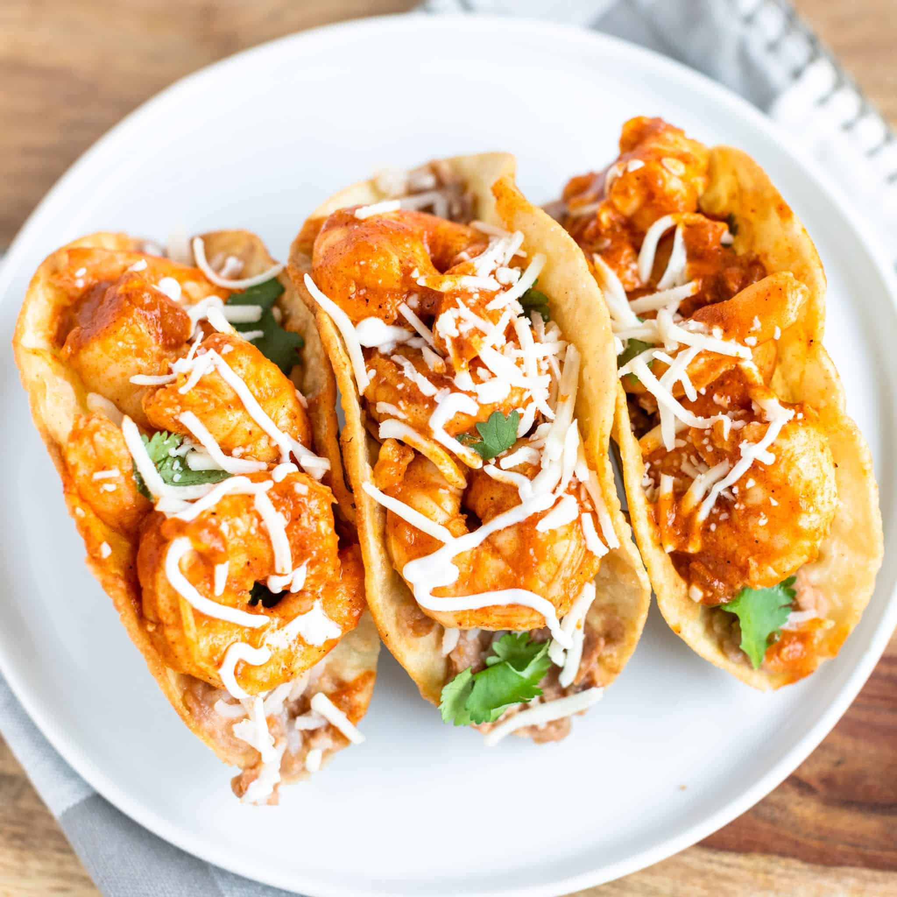
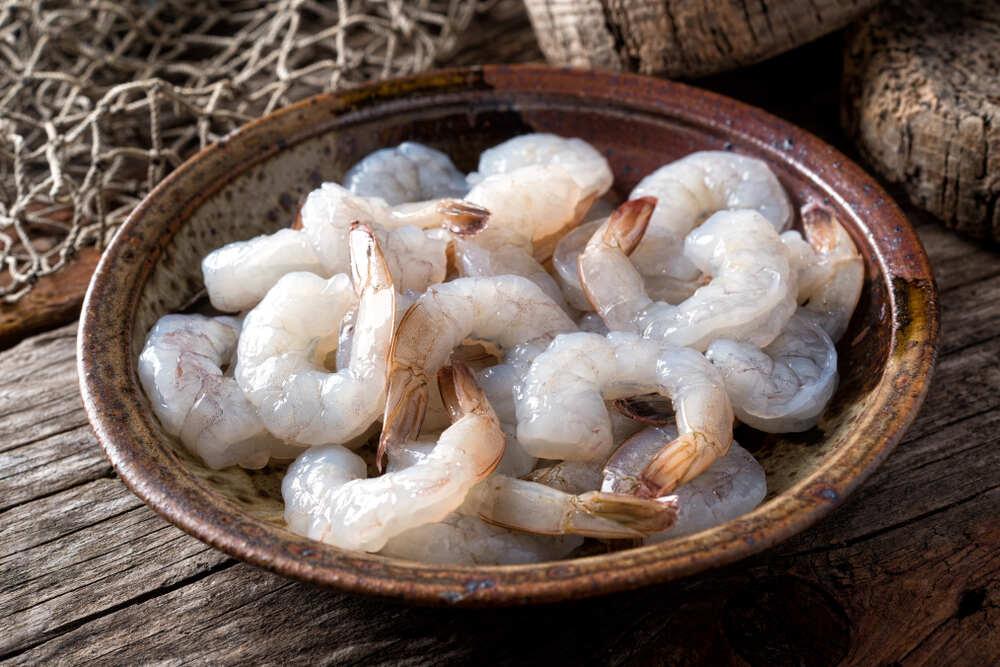
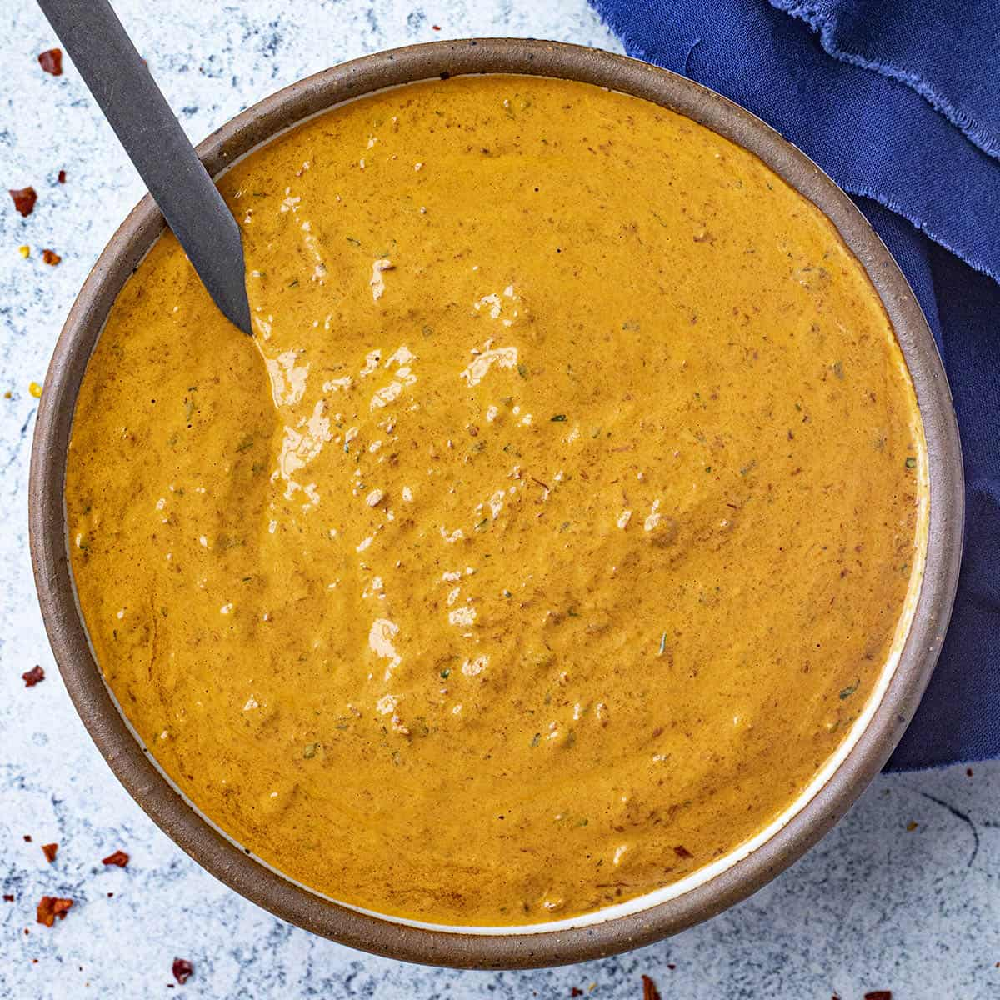
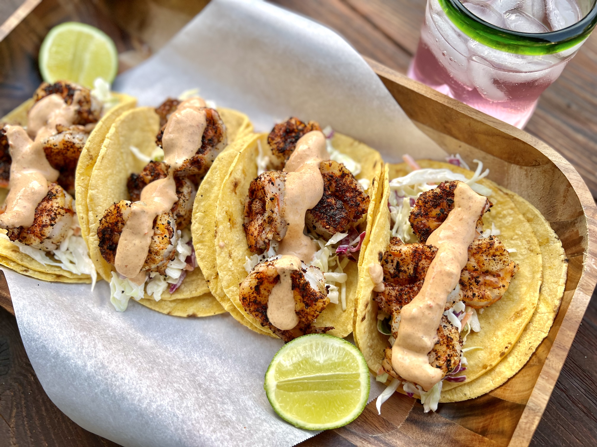
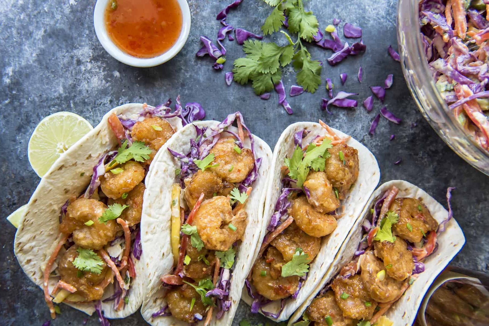

These shrimp tacos are fresh, fast, and packed with flavor. Juicy seasoned shrimp are seared until golden and tucked into warm tortillas with crunchy cabbage slaw, creamy chipotle sauce, and a squeeze of fresh lime. Perfect for a weeknight dinner that feels like a weekend treat.
⏱
20 minutes
🍳
10 minutes
🌯
4 tacos

The finished breakfast burrito, ready to serve.

All the ingredients laid out and ready to go.
In a small bowl, whisk together the sour cream, mayonnaise, minced chipotle peppers, and lime juice. Taste and adjust seasoning. Cover and refrigerate until ready to serve.

Wonderful sauce goes great on all seafoods.
Pat the shrimp dry with paper towels. In a large bowl, toss the shrimp with olive oil, chili powder, smoked paprika, garlic powder, cumin, salt, and black pepper until evenly coated.
Heat a large skillet over medium-high heat. Add the shrimp in a single layer and cook for 2–3 minutes per side until pink, opaque, and slightly charred at the edges. Do not overcrowd the pan. Remove from heat.
Heat the tortillas one at a time in a dry skillet over medium heat for about 30 seconds per side, or wrap them in a damp paper towel and microwave for 30–45 seconds until soft and pliable.
Spread a spoonful of chipotle sauce onto each warm tortilla. Top with a small handful of shredded cabbage, then 3–4 shrimp. Add any optional toppings you like.

Assembled shrimp tacos.
Finish each taco with a sprinkle of fresh cilantro and a squeeze of lime juice. Serve immediately with extra sauce and lime wedges on the side.

Delicious dish.
Shrimp cook very quickly — usually just 2–3 minutes per side. As soon as they turn pink and curl into a loose C shape, they're done. An O shape means overcooked, which will make them rubbery.
Patting the shrimp dry with paper towels before adding the spices helps them sear rather than steam in the pan. This gives you that slightly crispy, golden exterior that makes all the difference.
The chipotle cream sauce actually gets better as it sits. Make it up to 2 days in advance and store it in an airtight container in the fridge. This is a great time-saver if you're prepping for a dinner party or busy weeknight.
This recipe gallery was made possible by Pinterest, Google Images, and my computer science class, for providing images and teaching me how to code HTML.